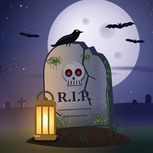
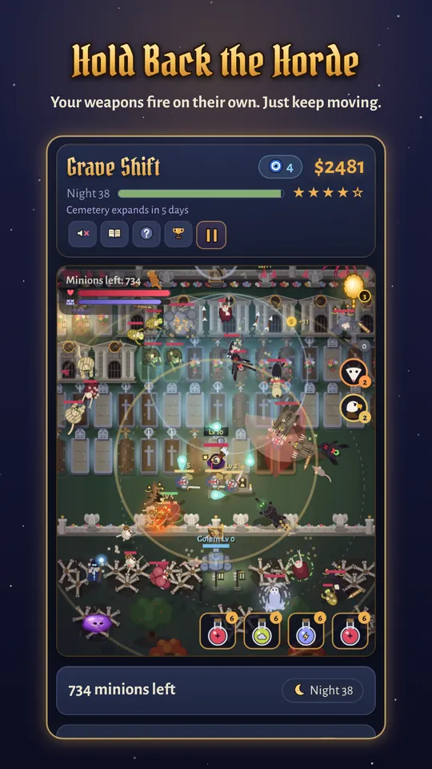
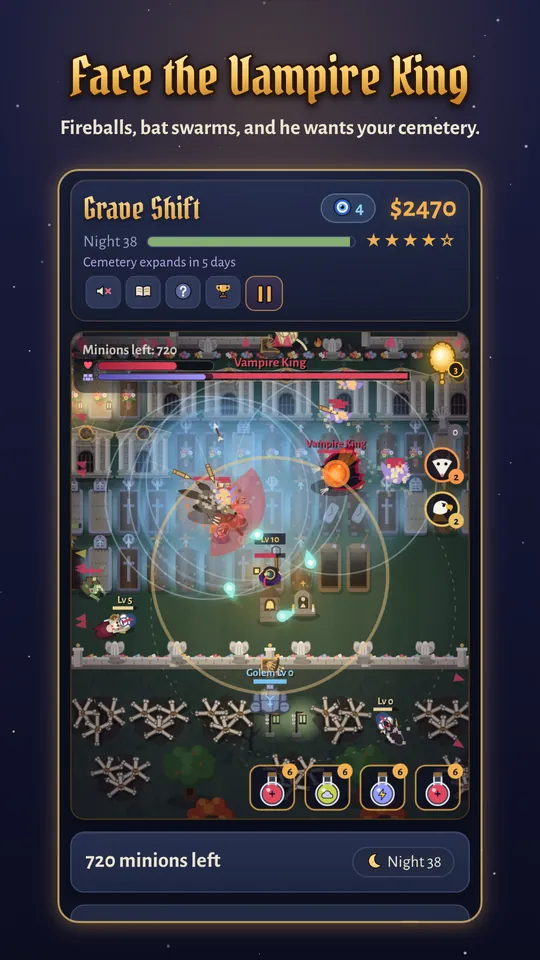
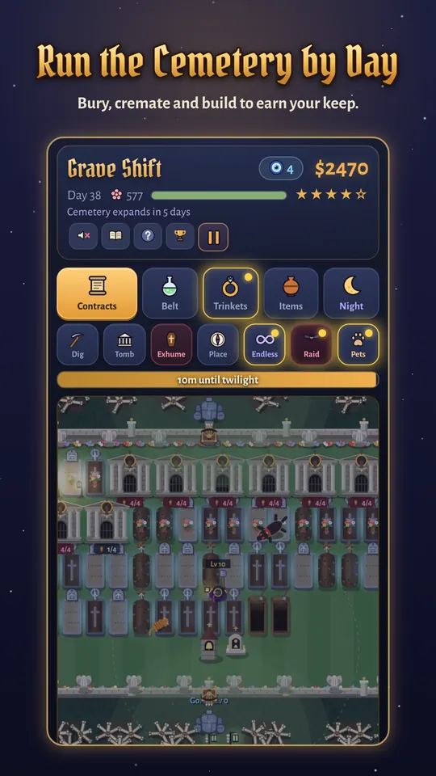
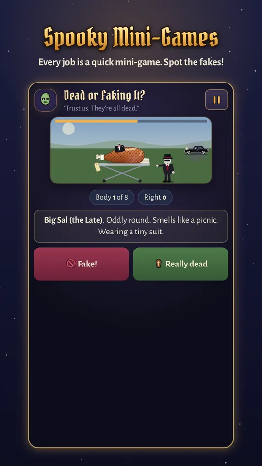

Grave Shift
The Vampire King wants your cemetery.
A spooky, funny cemetery-defense game for Android. Run your graveyard by day, then grab a lantern and hold off the Vampire King’s monster army by night.
Bury by day. Survive by night.
You’re the Keeper of a small-town cemetery: one tired caretaker with a shovel, a lantern and a very sharp stake.
By day
Collect bodies from the hearse, then bury, cremate or inter them, or harvest their organs for riskier pay. Every job is a quick mini-game, and the Vampire King’s goons, grave robbers and one very persistent opossum keep the days busy.
At dusk
Spend your gold and Talismans on the Keeper, weapons, towers, walls, helpers and pets: stake crossbows, holy water, a blessed bell, garlic lanterns, wall cannons and trees that fight back.
At night
The monsters come: skeletons, werewolves, banshees, giant spiders and worse. Your weapons fire on their own; you keep moving. Every seventh night the Vampire King attacks himself, and every week the cemetery grows and the army returns stronger.




And there’s more
Some nights are worse than others. When the Crimson Horde marches or the Worg pack howls, you’ll know. Run.
- Mini-bosses crash the party: the Grim Reaper, the Minotaur, the Necromancer and the Headless Horseman.
- Strange moons that change the rules for a night.
- Hire a Guardian, raise a Reanimated Corpse, bind a Golem, and befriend pets that pitch in.
- Dusk Dares for bonus gold, if you’re feeling brave.
- Endless Night mode, for when you just want to see how long you can last.
- A bestiary of every horror you’ve met, and achievements to chase.
- An original, haunting soundtrack.
- Plays offline, with cloud saves through Google Play Games to keep your cemetery safe.
Grave Shift is free to play, with optional in-app purchases and ads. Prefer no ads? Ad Free is available in the game’s Treasure Chest.
Wicked Pumpkin Games
We’re a small independent studio making spooky, funny games.
Questions, bug reports or ideas? Write to us at WickedPumpkinLLC@gmail.com.